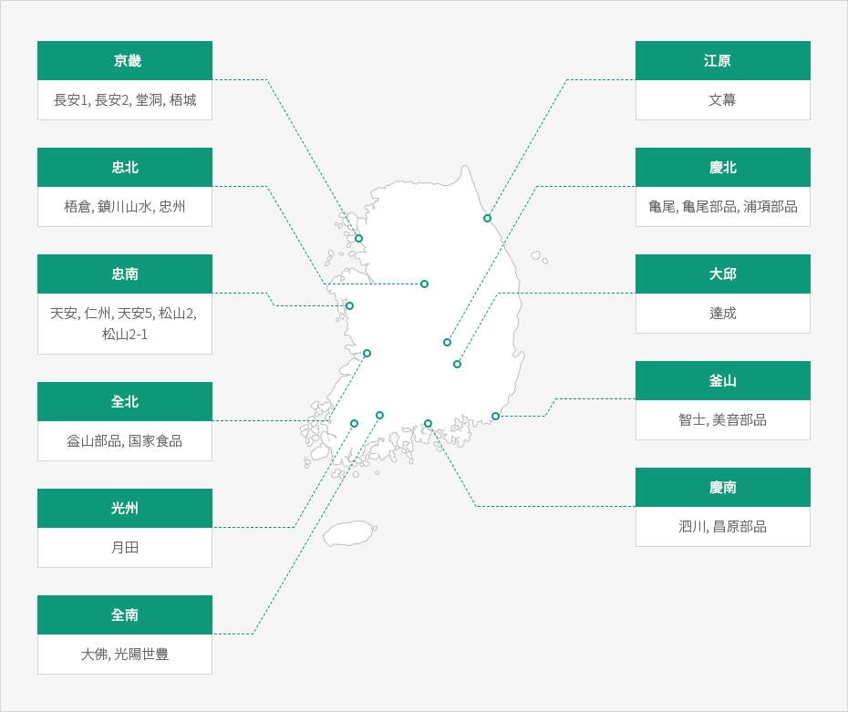

外国人投資地域
- Home
- 투자의 기회
- 外国人投資企業の重点誘致地域
- 外国人投資地域
産業立地には経済自由区域、外国人投資地域及び自由貿易地域などの外国人投資家を支援するための地域があり、立地は賃貸又は分譲の形で支援される。このような地域は一定条件を満たせば立地支援のみならず、租税減免が適用され、他の法令で制限される事項に対しても例外が適用される場合もある。
外国人投資地域は団地型、個別型、サービス型の3つの形態がある。 団地型と個別型外国人投資地域は手ごろな賃借料で提供し、一定の条件を満たせば追加の賃借料の減免と租税減免が可能である。サービス型外国人投資地域は租税減免の支援はないが、賃借料の補助などの優遇が受けられる。
外国人投資地域の指定現況
2018年12月末基準
| 団地型 | 個別型 | サービス型 | |
|---|---|---|---|
| 指定現況(個) | 26 | 84 | 3 |
地域別団地型外国人投資地域の現況
2018年12月末基準


- 京畿: 長安1, 長安2, 堂洞, 梧城
- 江原: 文幕
- 忠北: 梧倉, 鎮川山水, 忠州
- 慶北: 亀尾, 亀尾部品, 浦項部品
- 忠南: 天安, 仁州, 天安5, 松山2, 松山2-1
- 大邱: 達成
- 全北: 益山部品, 国家食品
- 釜山: 智士, 美音部品
- 光州: 月田
- 慶南: 泗川, 昌原部品
- 全南: 大佛, 光陽世豊

地域別団地型外国人投資地域の賃借料水準
2018年12月末基準
| 団地名 | 賃借料 (ウォン/㎡-月) |
団地名 | 賃借料 (ウォン/㎡-月) |
団地名 | 賃借料 (ウォン/㎡-月) |
|---|---|---|---|---|---|
| 天安(忠南) | 310 | 長安2(京畿) | 303 | 月田(光州) | (1次)190 / (2次)250 |
| 大佛(全南) | 69 | 達成(大邱) | 218 | 文幕(江原) | 249 |
| 泗川(慶南) | 224 | 亀尾部品(慶北) | 151 | 鎮川山水(忠北) | 144 |
| 亀尾(慶北) | 165 | 梧城(京畿) | 323 | 松山2(忠南) | 290 |
| 梧倉(忠北) | 223 | 浦項(部品) | 127 | 国家食品(全北) | 126 |
| 長安1(京畿) | 258 | 益山(部品) | 103 | 忠州(忠北) | 160 |
| 仁州(忠南) | 161 | 昌原南門(部品) | 451 | 松山2-1(忠南) | 290 |
| 堂洞(京畿) | 383 | 美音(部品) | 425 | 光陽世豊(全南) | 248 |
| 智士(釜山) | 438 | 天安5(忠南) | 207 |